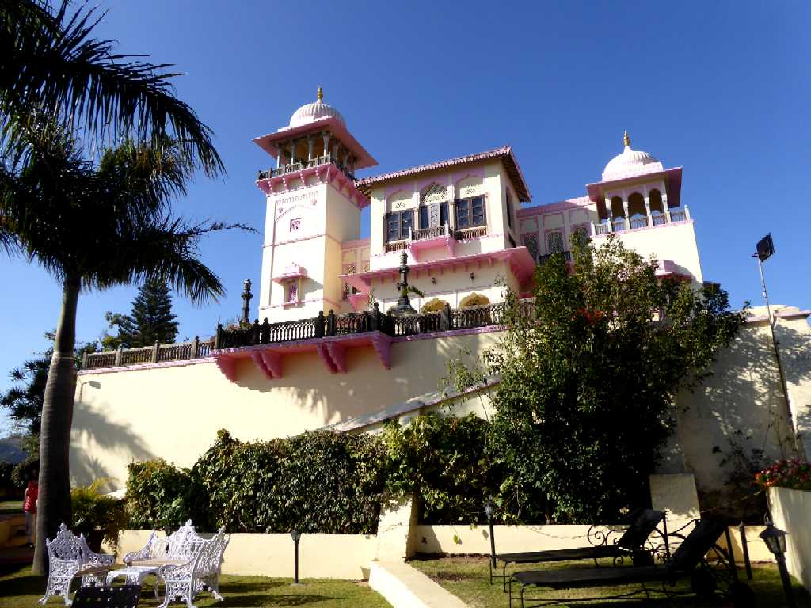
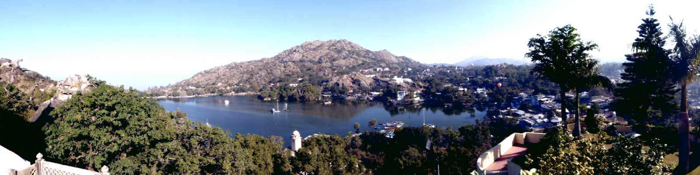
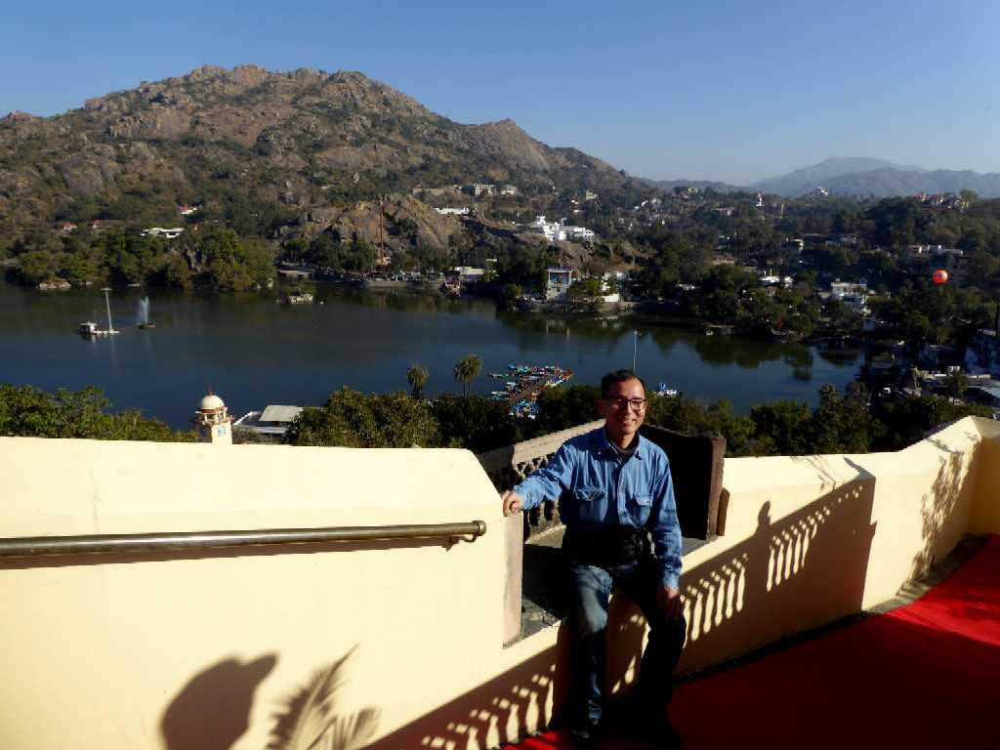
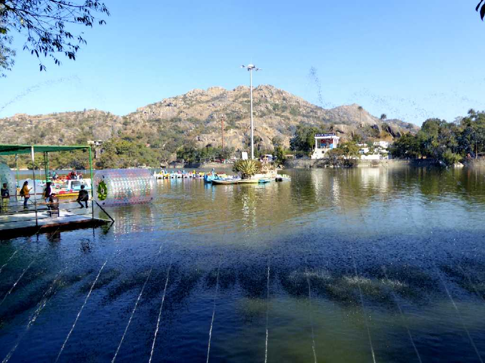

1,722m Guru Shikhar 1,220m Nakki Lake Mount Abu
マハラジャの宮殿からナッキー湖とマウントアブの街を望む

Jaipur House
ラジャスタン王家の館

Nakki Lake Mount Abu
砂漠が広がるグジャラート州とラジャスタン州にあるアラバリ山地の標高１,２２０ｍにあるナッキー湖畔に避暑地として栄えたマウントアブ

January 27 2018 Nakki Lake

Main Street Mount Abu

Port Nakki Lake Mount Abu